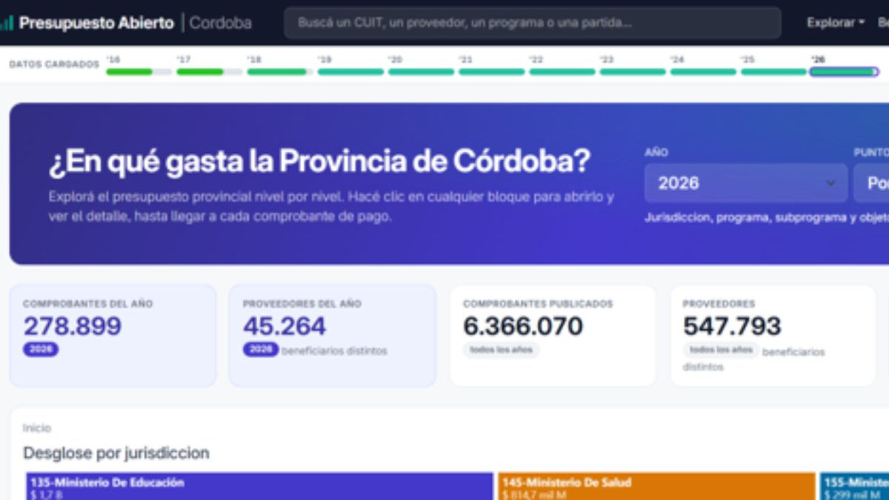
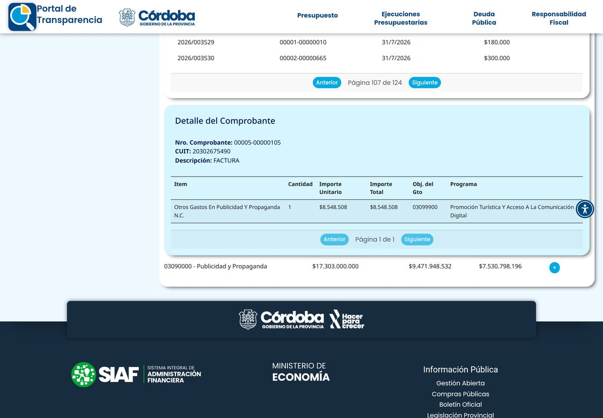
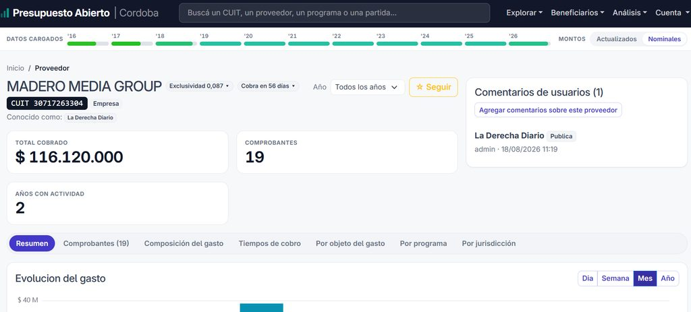

Presupuesto Abierto: seis años de scraping y un portal para periodistas
En mayo de 2020 consolidé una serie de scripts que venían procesando (desde hacía algunos años y con otros investigadores) la ejecución presupuestaria de la Provincia de Córdoba desde su portal de transparencia. Seis años después eso es FreeData: un portal con más de seis millones de comprobantes de pago, de 2016 a 2026, y más de medio millón de proveedores. Esta semana Ruido, la red de periodismo de investigación con la que trabajamos, lo presentó públicamente.

El origen del dato
La Provincia publica cada comprobante que paga. Eso es mucho más de lo que publica la mayoría de los gobiernos argentinos y es bueno reconocerlo. El problema es cómo: un portal donde para llegar a un comprobante hay que elegir el año, después la jurisdicción, después el programa, el subprograma, la partida, y recién ahí aparece una lista paginada de a diez. No hay descarga, no hay API, no hay forma de preguntar "cuánto cobró este CUIT".

Lo que hice fue recorrer ese árbol completo, año por año, nodo por nodo, guardando cada comprobante con sus items. Es scraping paciente: millones de pedidos durante alrededor de una decada, muchos reintentos y una base que crece de a poco. En 2026 la Provincia cambió el portal y hubo que reescribir todo el recolector contra la interfaz nueva.
El portal
Sobre esa base construimos desde cero una aplicación en Django con PostgreSQL. Lo principal:
- Búsqueda por proveedor, CUIT, programa o partida, en toda la serie.
- Montos originales y actualizados por inflación (gracias Sol Monoldo!), mes a mes, para que una compra de 2017 se pueda comparar con una de 2026.
- Tiempos de cobro por proveedor: cuánto tarda el Estado en pagarle a cada uno.
- Seguimiento: cualquier usuario puede seguir un proveedor y recibir avisos cuando aparecen comprobantes nuevos.
- Notas de usuarios sobre proveedores, para que un periodista le ponga nombre conocido a una razón social.
- Descarga en CSV de cualquier búsqueda, con los filtros aplicados.
- Graficos, muchos gráficos por todos lados.
- Descargas de CSV de tablas a la vista para seguir trabajando en la compu o cruzar datos por fuera.

Portal privado
Este es un portal cerrado. Se entra por invitación y con passkeys. Hoy lo usan periodistas y de a poco se va abriendo a investigadores y organizaciones.
¿Por qué?
La decisión de no abrirlo tiene varias razones (no necesariamente en este orden):
- Alojar esta cantidad de datos y todas las posibilidad que da esta plataforma en un servidor require recursos que este proyecto no tiene. Nada de esto genera ingresos de ninguna forma lamentablemente. Hemos postulado a subsidios pero todavía no hemos tenido suerte. Acá podes donar a la Red Ruido
- El trabajo realizado es muy grande, requiere validación que todo funcione como se espera. Estamos en etapa de pruebas.
- Hay datos que consideramos que no es buena idea que sean públicos. Asumimos que los responsables de este portal son plenamente concientes de lo que publican pero aunque parezca extraño no coincidimos con semejante nivel de apertura. Sin dar ejemplos, hay datos que se refieren a situaciones personales de las personas que si bien como fondos publicos deben ser abiertos no es buena idea que se publiquen de forma indiscriminada. Por eso el portal es privado y con invitación a personas que lo van a usar responsablemente con fines perdiosticos y de investigación.
- Porque si, porque despues de tanto trabajo esta bien ser discrecionales con el uso. Queremos que esto se use bien.
Algo de cocina
- Django y PostgreSQL, sin frameworks de frontend. HTML plano y algo de JavaScript donde hace falta.
- Dos servidores chicos: uno con un webserver y la aplicación detrás de Cloudflare y otro con la base de datos.
- Cache, mucho cache en cada lugar que se pudo.
- El recolector corre aparte: cada año tiene un porcentaje de cobertura que se controla con un informe de integridad para saber que falta
- Autenticación con WebAuthn. Nadie tiene una contraseña que filtrar.
- Respeto por el servidor del que obtenemos datos. Corremos muy lento, en general entre 20 y 40 requests por minuto.
Riesgos
En 2026 la Provincia cambió la interfaz gráfica y escondió muchos datos. Saco tambien las Agencias de Gobierno (Cultura, Deportes, etc). Muchos subprogramas ya no son visibles. ¿Que pasa si se apaga el portal? Esta plataforma puede seguir abierta aún si eso pasara y hoy mismo ya muestra más datos que el portal oficial por lo que se escodió en la última actualización.